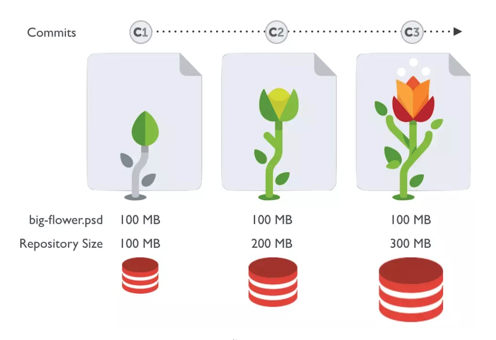
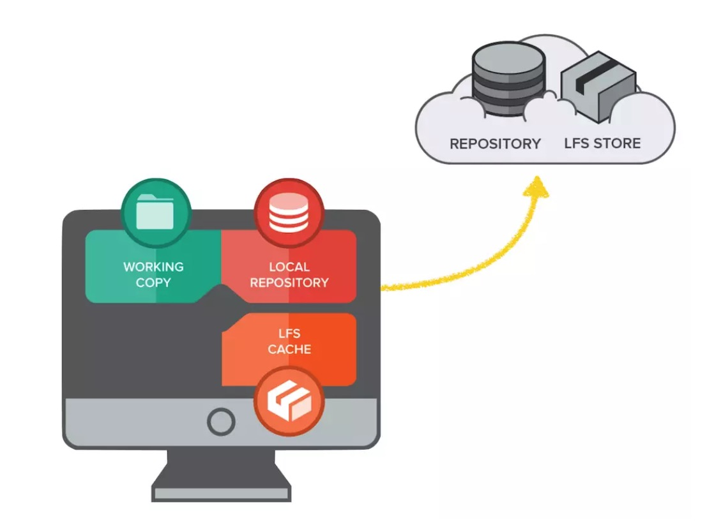

纸上得来终觉浅，绝知此事要躬行。
大文件存储(LFS)是可以把音乐、图片、视频等指定的任意文件存在 Git 仓库之外，而在 Git 仓库中用一个占用空间 1KB 不到的文本指针来代替的小工具。通过把大文件存储在 Git 仓库之外，可以减小 Git 仓库本身的体积，使克隆 Git 仓库的速度加快，也使得 Git 不会因为仓库中充满大文件而损失性能。

1. 背景介绍
Git LFS是Github开发的一个Git的扩展，用于实现Git对大文件的支持。
- 在游戏开发过程中，设计资源占用了很大一部分空间。像
png、psd等文件是二进制(blob)的体积也很庞大。但Git的diff/patch等是基于文件行的。对于二进制文件来说，Git需要存储每次commit的改动。每次当二进制文件修改发生变化时，都会产生额外的提交量，导致clone和pull的数据量大增，在线仓库的体积也会迅速增长。

LFS(Large File Storage)就是为了解决这一问题而产生的工具。它将你所标记的大文件保存至另外的仓库，而在主仓库仅保留其轻量级指针。那么在你检出版本时，根据指针的变化情况下更新对应的大文件，而不是在本地保存所有版本的大文件。

2. 安装扩展
安装 Git LFS 需要 Git 的版本不低于 1.8.5
# Mac
$ brew install git-lfs
$ git lfs install
# Linux
$ curl -s https://packagecloud.io/install/repositories/github/git-lfs/script.deb.sh | sudo bash
$ sudo apt-get install git-lfs
$ git lfs install
3. 快速使用
使用很简单的，容易上手
# 1.开启lfs功能
$ git lfs install
# 2.追踪所有后缀名为“.psd”的文件
$ git lfs track "*.iso"
# 3.追踪单个文件
git lfs track "logo.png"
# 4.提交存储信息文件
$ git add .gitattributes
# 5.提交并推送到GitHub仓库
$ git add .
$ git commit -m "Add some files"
$ git push origin master
# 只推送仓库本身⽽不推送任何LFS对象
$ git push --no-verify backup master
# 仅获取指定⽬录下的LFS对象 - 包含指定的⽂件夹
$ git config lfs.fetchinclude 'images/**'
# 仅获取指定⽬录下的LFS对象 - 排除指定的⽂件夹
$ git config lfs.fetchexclude 'images/**'
# 也可以同时使⽤⿊⽩名单规则
$ git config lfs.fetchinclude 'videos/**'
$ git config lfs.fetchexclude 'videos/chameleon.mp4'
# ⼀次获取LFS对象的最近版本(同时下载过去7天内的版本)
$ git config lfs.fetchrecentcommitsdays 7
4. 使用文档
git lfs <command> [<args>]
- [1] 常用命令
| 编号 | 命令 | 含义解释 |
|---|---|---|
| 1 | git lfs track |
查看或添加 LFS 路径到 attributes 文件 |
| 2 | git lfs untrack |
从 attributes 文件中删除 LFS 路径 |
| 3 | git lfs ls-files |
查看 LFS 中跟踪的文件列表 |
| 4 | git lfs status |
在工作树中显示 LFS 文件的状态 |
| 5 | git lfs fetch |
从远程仓库下载 LFS 文件 |
| 6 | git lfs pull |
获取最新的 LFS 对象当本地仓库 |
| 7 | git lfs push |
推送本地的 LFS 修改到远程仓库 |
| 8 | git lfs checkout |
本地 LFS 分支切换 |
| 9 | git lfs clone |
克隆包含 LFS 文件的 Git 远程仓库 |
| 10 | git lfs update |
更新当前 Git 仓库的 hooks 地址 |
| 11 | git lfs version |
显示 LFS 的版本号 |
| 12 | git lfs env |
显示 LFS 的环境变量 |
| 13 | git lfs prune |
删除全部旧的 LFS 文件 |
# 克隆包含“Git LFS”文件的远程仓库到本地
$ git clone git@gitlab.example.com:group/project.git
# 已经克隆了仓库且想要获取远程存储库中的最新LFS对象
$ git lfs fetch origin master
# 获取最新的LFS对象当本地仓库
$ git lfs pull
# 推送本地的LFS修改到远程仓库
$ git lfs push
- [2] 生疏命令
| 编号 | 命令 | 含义解释 |
|---|---|---|
| 1 | git lfs lock |
锁定一个或者一些文件；只允许当前的用户对这些文件进行修改 |
| 2 | git lfs locks |
在 LFS 的服务器上面注册，标识这个文件已经加锁了 |
| 3 | git lfs unlock |
解锁一个或者一些文件；只允许当前的用户对这些文件进行修改 |
| 4 | git lfs migrate |
用来将当前已经被 GIT 储存库(.git)保存的文件以 LFS 文件的形式保存 |
| 5 | git lfs logs last |
看此日志文件 |
# 防止在多人协作的场景下冲突
# -----------------------------------------------------------------------
# 在使用文件锁定之前，要做的第一件事是告诉LFS哪种文件是可锁定的
# 以下命令就是将PNG文件存储在LFS中，并将其标记为可锁定的状态
$ git lfs track "*.png" --lockable
# 执行上述命令后，将创建或更新具有以下内容的名为.gitattributes的文件
*.png filter=lfs diff=lfs merge=lfs -text lockable
# 准备好之后，先将其中一个文档给锁定了
$ git lfs lock images/banner.png
Locked images/banner.png
# 这会将文件以您的名字锁定在服务器上注册
$ git lfs locks
images/banner.png joe ID:123
# 推送更改后，您可以解锁文件，以便其他人也可以编辑它
$ git lfs unlock --id=123
$ git lfs unlock images/banner.png
# 如果出于某种原因需要解锁未被您锁定的文件
# 可以使用--force标志，只要您对项目具有maintainer访问权限即可
$ git lfs unlock --id=123 --force
# 迁移可以使用，但并没那么美好(将GIT对象转为LFS对象)
# -----------------------------------------------------------------------
# 将所有本地分支上匹配到的文件提交历史版本都转换为LFS上面
# 这个时候无论你切换到哪个分支，都会出现.gitattributes文件，且内容都是一样的
$ git lfs migrate import --include="*.bin" --everything
$ git lfs push --force
# 如果只想更新某个分支的话，可以使用如下命令
# 切换后需要把切换之后的本地分支提交到远程仓库了，需要手动push更新远程仓库中的各个分支
$ git lfs migrate import --include="*.bin" --include-ref=refs/heads/master
$ git lfs push --force
# 当其他人员再次使用pull去远程拉取的时候会失败
# 可以使用下面命令来把远程仓库被修改的历史与本地仓库历史做合并，但是最好是重新拉取
$ git lfs pull --allow-unrelated-histories
# 切换成功后，GIT仓库的大小可能并没有变化
# 主要原因可能是之前的提交还在，因此需要做一些清理工作
# 如果不是历史记录非常重要的仓库，建议不要像上述这么做，而是重新建立一个新的仓库
$ git reflog expire --expire-unreachable=now --all
$ git gc --prune=now
- [3] 完整命令
# High level commands
# -----------------------------------------------------------------------
* git lfs checkout:
Populate working copy with real content from Git LFS files.
* git lfs fsck:
Check Git LFS files for consistency.
* git lfs install:
Install Git LFS configuration.
* git lfs lock:
Set a file as "locked" on the Git LFS server.
* git lfs locks:
List currently "locked" files from the Git LFS server.
* git lfs logs:
Show errors from the Git LFS command.
* git lfs migrate:
Migrate history to or from Git LFS
* git lfs prune:
Delete old Git LFS files from local storage
* git lfs pull:
Fetch Git LFS changes from the remote & checkout any required working tree
files.
* git lfs push:
Push queued large files to the Git LFS endpoint.
* git lfs uninstall:
Uninstall Git LFS by removing hooks and smudge/clean filter configuration.
* git lfs unlock:
Remove "locked" setting for a file on the Git LFS server.
# Low level commands
# -----------------------------------------------------------------------
* git lfs clean:
Git clean filter that converts large files to pointers.
* git lfs pointer:
Build and compare pointers.
* git lfs pre-push:
Git pre-push hook implementation.
* git lfs filter-process:
Git process filter that converts between large files and pointers.
* git lfs smudge:
Git smudge filter that converts pointer in blobs to the actual content.
5. 参考文档
送人玫瑰，手有余香！